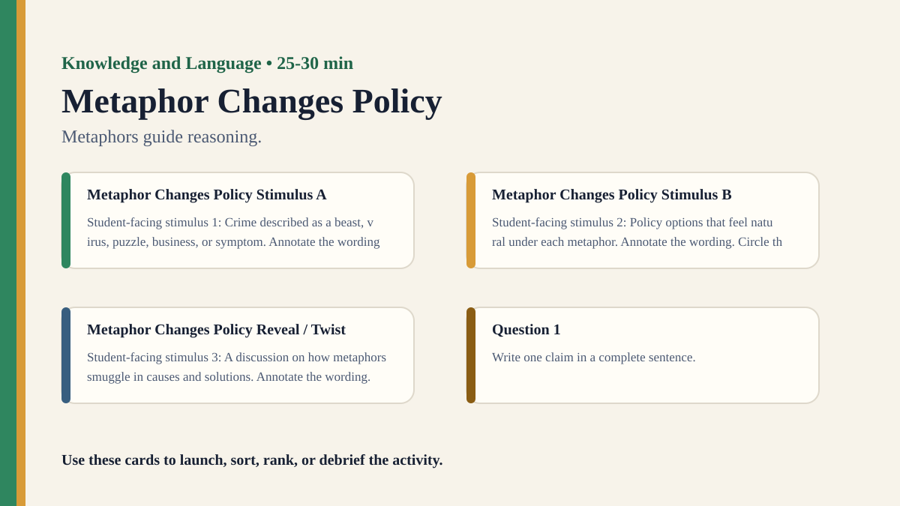

Free classroom resource pack
Metaphor Changes Policy
Metaphors guide reasoning.
Included Files
{kind=link}
Visual Prompt

Student Prompt
Inspect Metaphor Changes Policy Stimulus A. Record one first claim, the evidence you used, your confidence, and what would make you revise.
Actual Lesson Questions
These are the questions students answer during the lesson, not just teacher-facing discussion prompts.
| # | Question for students | Teacher key / cue |
|---|---|---|
| 1 | After inspecting Metaphor Changes Policy Stimulus A, what is your first knowledge claim? | Teacher cue: look for a clear claim, not just a description. |
| 2 | Which exact detail from Metaphor Changes Policy Stimulus A did you use as evidence? | Teacher cue: students should name visible words, data, source features, method features, or contextual clues. |
| 3 | What did you infer beyond the evidence? | Teacher cue: this is where assumptions, framing, models, or perspective usually appear. |
| 4 | How confident are you: 50%, 60%, 70%, 80%, 90%, or 100%? | Teacher cue: confidence is data for the debrief, not a grade. |
| 5 | What missing information would most improve the knowledge claim? | Teacher cue: push for method, source, context, comparison, or definitions. |
| 6 | Do metaphors reveal truth or create interpretations? | Teacher cue: students should move from the classroom example to a general TOK issue. |
Concrete Stimulus Packet
Print or project these exact stimuli. Students should inspect these before the debrief.
Stimulus
Metaphor Changes Policy Stimulus A
Student-facing stimulus 1: Crime described as a beast, virus, puzzle, business, or symptom. Annotate the wording. Circle the words that change tone, emotion, implication, or trust.
Students inspect this exact card first and commit to a claim before hearing anyone else.Stimulus
Metaphor Changes Policy Stimulus B
Student-facing stimulus 2: Policy options that feel natural under each metaphor. Annotate the wording. Circle the words that change tone, emotion, implication, or trust.
Use this for comparison, a second round, or a partner challenge.Stimulus
Metaphor Changes Policy Reveal / Twist
Student-facing stimulus 3: A discussion on how metaphors smuggle in causes and solutions. Annotate the wording. Circle the words that change tone, emotion, implication, or trust.
Teacher reveal: connect the changed response to the big idea — Metaphors guide reasoning.Student Task
Use the stimulus cards to complete the observation/inference/evidence/confidence grid, then answer one TOK knowledge question connected to Knowledge and Language.
Teacher Key / Reveal
The key move is not the “right answer”; it is the moment students see how metaphors guide reasoning.
- Strong response: separates observation from inference.
- Strong response: names a method, source, model, language choice, context, or perspective.
- Strong response: revises confidence when new evidence or a new criterion appears.
- Weak response: gives only opinion or says “it depends” without criteria.
Teacher Run Sheet
- Prepare a starter stimulus using: Crime described as a beast, virus, puzzle, business, or symptom.
- Print or project the student response grid before the activity begins.
- Plan a private first-response moment before any group discussion.
Concrete Examples
- Crime described as a beast, virus, puzzle, business, or symptom.
- Policy options that feel natural under each metaphor.
- A discussion on how metaphors smuggle in causes and solutions.
Printable Activity Cards
Print, cut, sort, rank, annotate, or project these cards. They are deliberately fictional/open so teachers can adapt them safely.
Stimulus
Metaphor Changes Policy Stimulus A
Student-facing stimulus 1: Crime described as a beast, virus, puzzle, business, or symptom. Annotate the wording. Circle the words that change tone, emotion, implication, or trust.
Students inspect this exact card first and commit to a claim before hearing anyone else.Stimulus
Metaphor Changes Policy Stimulus B
Student-facing stimulus 2: Policy options that feel natural under each metaphor. Annotate the wording. Circle the words that change tone, emotion, implication, or trust.
Use this for comparison, a second round, or a partner challenge.Stimulus
Metaphor Changes Policy Reveal / Twist
Student-facing stimulus 3: A discussion on how metaphors smuggle in causes and solutions. Annotate the wording. Circle the words that change tone, emotion, implication, or trust.
Teacher reveal: connect the changed response to the big idea — Metaphors guide reasoning.Lesson question
Question 1
Write one claim in a complete sentence.
Teacher cue: look for a clear claim, not just a description.Lesson question
Question 2
List two pieces of evidence.
Teacher cue: students should name visible words, data, source features, method features, or contextual clues.Lesson question
Question 3
Separate observation from interpretation.
Teacher cue: this is where assumptions, framing, models, or perspective usually appear.Lesson question
Question 4
Circle one confidence level and justify it.
Teacher cue: confidence is data for the debrief, not a grade.Lesson question
Question 5
Name one piece of missing information.
Teacher cue: push for method, source, context, comparison, or definitions.Lesson question
Question 6
Answer using the activity as evidence.
Teacher cue: students should move from the classroom example to a general TOK issue.Student task
Student Task
Use the stimulus cards to complete the observation/inference/evidence/confidence grid, then answer one TOK knowledge question connected to Knowledge and Language.
Do metaphors reveal truth or create interpretations?Teacher reveal
Teacher Reveal
The key move is not the “right answer”; it is the moment students see how metaphors guide reasoning.
Strong response: separates observation from inference. | Strong response: names a method, source, model, language choice, context, or perspective. | Strong response: revises confidence when new evidence or a new criterion appears. | Weak response: gives only opinion or says “it depends” without criteria.Student Recording Sheet
| Card / stimulus | What I noticed | What I inferred | Evidence | Confidence |
|---|---|---|---|---|
Debrief Prompts
- Do metaphors reveal truth or create interpretations?
- Are some metaphors more ethical than others?
- How do metaphors shape public policy and science communication?